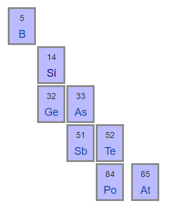
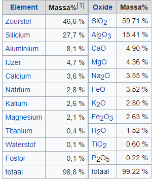
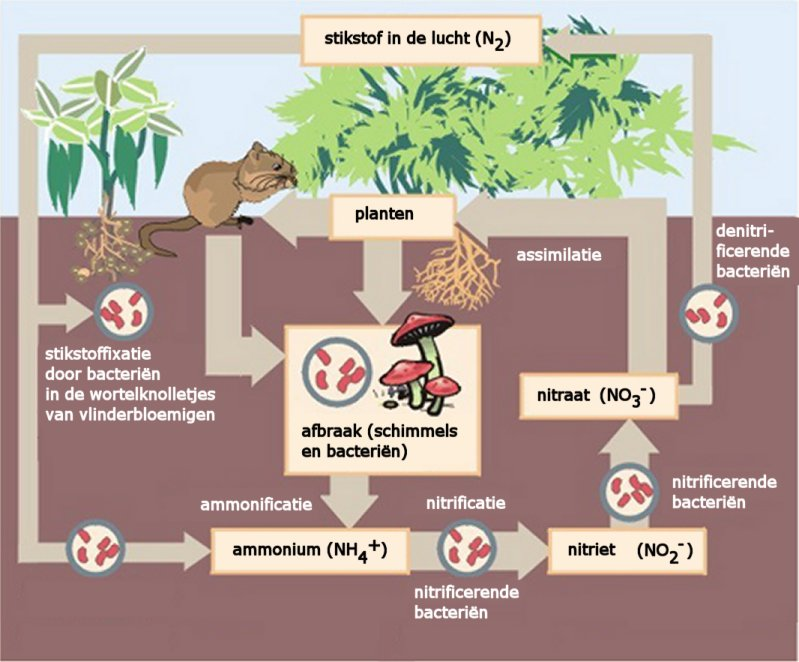

Met uitzondering van de edelgassen, de laatste kolom in het Periodiek Systeem van elementen, komen elementen niet als losse atomen voor. De elementen vormen verbindingen waarbij atomen aan elkaar kleven. Deze stoffen worden zuivere stoffen genoemd om ze te onderscheiden van mengsels die bestaan uit verschillende zuivere stoffen die in een bepaalde verhouding met elkaar zijn gemengd.
Men kan zich afvragen hoe men kan vaststellen of een stof zuiver is. Dit kan omdat elke zuivere stof unieke eigenschappen heeft. Bijvoorbeeld zuiver water is kleurloos, smakeloos, bevriest bij precies $0^\circ C$, kookt bij $100^\circ C$ (bij een druk van 760mm) en heeft bij $4^\circ C$ een soortelijk gewicht van 1 kg/L. Soms ontleent een zuivere stof zijn naam aan de stof waaruit hij ontleedt is. Bijvoorbeeld beetwortelsuiker1 of rietsuiker. In beide gevallen betreft het dezelfde zuivere stof. Daarentegen is de zoete stof uit vruchten, vruchtensuiker, niet gelijk aan rietsuiker. In het sap van rietsuiker komt ook vruchtensuiker voor. Als wij deze afzonderen uit het rietsuikersap blijven wij deze vruchtensuiker noemen. Om een zuivere stof nauwkeurig te definiëren maken scheikundige gebruik van chemische formules en chemische namen die voldoen aan de regels voor nomenclatuur.
Anorganische en Organische Zuivere Stoffen
Zuivere stoffen worden vaak onderscheiden in anorganische en organische stoffen. Dit onderscheid houdt verband met de twee belangrijke takken binnen de scheikunde: de anorganische en de organische scheikunde. De organische scheikunde bestudeert verbindingen met koolstof, zoals olie, gas en plastics, alsmede de koolstofverbindingen in de levende natuur. Een aantal kleine koolstofverbindingen worden tot de anorganische chemie gerekend, bijvoorbeeld $\ce{CO}$ en $\ce{CO2}$.
Enkelvoudige en Samengestelde Zuivere Stoffen
Zuivere stoffen vallen uiteen in:
enkelvoudige stoffen: verbindingen van één element (atoomsoort), deze verbindingen worden ook wel elementen genoemd, maar beter is om het woord element te gebruiken voor de atoomsoort
samengestelde stoffen: verbindingen tussen verschillende elementen (atoomsoorten)
De elementen in een samengestelde stof kunnen onveranderd in eigenschappen en hoeveelheden worden teruggewonnen. Dit heet de wet van elementenbehoud en berust op de onveranderlijkheid en onvergankelijkheid van de atomen. Het is deze wet die ten grondslag ligt aan de vele kringlopen in de natuur waarbij elementen in verschillende verbindingen opgaan maar uiteindelijke telkens dezelfde kringloop doorlopen. Ook is dit de basis van de scheikunde, het terugwinnen van elementen en het vormen van nieuwe verbindingen met de elementen.
Organische stoffen zijn altijd samengestelde stoffen.
Enkelvoudige Zuivere Stoffen
De enkelvoudige stoffen kunnen grofweg in 3 groepen worden onderverdeeld: de metalen (verreweg het grootste aantal), de metalloïden en de niet-metalen. Dit onderscheid wordt met name gemaakt vanwege de specifieke chemische eigenschappen van de elementen.
Niet Metalen
De niet-metalen komen in zuivere vorm bijna allemaal voor als gas, met uitzondering van koolstof, silicium, en fosfor. De atomen vormen een moleculaire verbinding2:
Element
Formula
waterstof
$\ce{H2}$
zuurstof
$\ce{O2}$
stikstof
$\ce{N2}$
fluor
$\ce{F2}$
chloor
$\ce{Cl2}$
broom
$\ce{Br2}$
jood
$\ce{I2}$
fosfor
$\ce{P4}$
zwavel
$\ce{S8}$
Dus de stof zuurstof is $\ce{O2}$ en niet $\ce{O}$, dat is de atoomsoort of element zuurstof.
Metalen
De metalen komen in zuivere vorm bijna allemaal voor als vaste stof. De atomen van stoffen in vaste vorm vormen een kristalrooster. Bij metalen raken de buitenste elektronen makkelijk los van een atoom en bewegen dan tussen de positief geladen atomen heen. Het geheel van positieve metaalionen en vrije elektronen vormt een sterke binding die metaalbinding heet. Door deze metaalbinding geleiden metalen stroom, zijn buigzaam, kunnen worden vervormd tot platen en kabels, hebben een hoog smeltpunt en mengen gemakkelijk met elkaar. Metalen hebben ook een glans. Een mengsel van metalen heet een legering. Een amalgaan is bijvoorbeeld een legering met kwik (Ag).
Metalloïden
De metalloïden of semi-metalen vormen een groep elementen die qua eigenschappen tussen de metalen en niet-metalen in zitten. In het periodiek systeem zijn zij te vinden op de diagonaal van het P-blok van linksboven boor naar rechtsonder astaat. De metalloïden vormen een groep met ongeveer dezelfde elektronegativiteit. Zij vormen de overgang van metalliek en reducerend gedrag (lage elektronegativiteit, extreem voorbeeld: cesium) naar niet-metaal en oxiderend gedrag (extreem voorbeeld: fluor). Hun verbindingen zijn soms metalliek, soms halfgeleidend of isolerend, afhankelijk van welke andere elementen in de verbinding betrokken zijn. De metalloïden zijn zeer belangrijk voor de moderne elektronica, denk hierbij aan IC's van silicium.

Samengestelde Zuivere Stoffen
De samengestelde zuivere stoffen bestaan uit anorganische stoffen en organische stoffen die we in andere modules nader zullen bespreken.
Stofklassen
Op basis van het voorgaande kunnen we stoffen onderverdelen in klassen zoals in het schema hieronder.
De Oorsprong van de Elementen
De elementen uit het Periodiek Systeem van Elementen verschillen allemaal van elkaar door het aantal protonen in de kern. In chemische reacties blijft het aantal protonen altijd gelijk en dus zijn het aantal atomen van elke atoomsoort voor en na de chemische reactie gelijk. De vraag dient zich aan hoe de verschillende atoomsoorten dan zijn ontstaan.
In het begin ontstond alle ruimte, energie en materie uit het niets. Deze gebeurtenis heet de Big-Bang, 13.7 miljard jaar geleden. Hoe uit het niets plotseling iets kan ontstaan is niet verklaarbaar aangezien alle redeneringen die wij hanteren gebaseerd zijn op oorzaak en gevolg. Dit is zoals wij de wereld ervaren en waarop wetenschappers hun theorieën hebben gefundeerd. Alleen er moet altijd een vertrekpunt zijn en dit punt heet dan een singulariteit, iets wat we als gegeven moeten beschouwen en niet verder kunnen verklaren met een theorie. Dus het vertrekpunt van alle wetenschap is de Big-Bang. Gelukkig blijkt vanaf dat moment oorzaak en gevolg wel weer samen te hangen.
Ons universum begon in het kleinst denkbare volume, veel kleiner dan de atoomkern, en met een onvoorstelbaar hoge temperatuur. Er bestonden nog geen atomen of sub-atomaire deeltjes. Het is moeilijk voorstelbaar wat het dan wel was, maar men zegt dat het pure energie was, wat dit dan ook mag zijn. Al meteen na de singulariteit nam het volume met duizelingwekkende snelheid toe en begon de temperatuur te dalen. De eerste sub-atomaire deeltjes verschenen na een fractie van een seconde. Er vormde zich elektronen en quarks. De bouwstenen van materie. Kort daarna ontstonden de protonen en neutronen, (nucleonen), waaruit atoomkernen worden gevormd. De temperatuur was nog te hoog voor het vormen van atomen. Door verdere expansie koelde het universum af tot enkele duizenden graden. Genoeg om elektronen en protonen te binden in een atoom. De overgrote meerderheid van die eerste atomen was waterstof - meer dan 90 procent van alle atomen - met een paar procent helium en een spoor van lithium dat erin werd gegooid. Die mix van elementen vormde de eerste sterren. De fabrieken voor het vormen van atoomsoorten.
Sterren ontstaan doordat stofwolken die voornamelijk bestaan uit waterstof, zo'n $10^{60}$ waterstof atomen onder invloed van zwaartekracht samen klonteren. De kinetische energie van de bewegende atomen transformeert naar potentiële zwaartekrachtenergie die zich vertaald in een enorme hitte (miljoenen graden) en druk (miljoenen atmosfeer) in de kern van de ster. Onder deze extreme omstandigheden van temperatuur en druk kan kernfusie plaatsvinden. Tijdens kernfusie smelten atomen samen en vormen zwaardere atoomsoorten (meer protonen in de kern).
Een van deze processen heet de proton-proton-ketting en leidt tot de vorming van helium. Het speelt zich bijvoorbeeld af in de kern van onze zon. De kern van twee waterstof atomen met elk 1 proton botsen met een zodanige kracht waarbij een diproton $\ce{He{^2_2}}$ wordt gevormd. Dit atoom is instabiel en valt vrijwel altijd weer uiteen in twee protons, maar soms zorgen de zwakke kernkrachten ervoor dat beta-plus-verval3 optreedt waarbij een proton omgezet in een neutron, een positron en een neutrino. Het neutron heeft geen lading en een massa bijna gelijk aan die van een proton. Het positron heeft een positieve lading ter grootte van die van een elektron, en het neutrino heeft geen lading en bijna geen massa. Het proton en neutron vormen dan een deuterium atoom.
Eerst de vorming van een instabiel diproton:
\[
\ce{{^{1}_{1}}H + {^{1}_{1}}H -> {^{2}_{2}}H }
\]
en dan soms een beta-plus verval4:
\[
\ce{{^{2}_{2}}H -> {^{2}_{1}}H + {^{0}_{1}}e+ + {^{0}_{0}}\nu }
\]
of gecombineerd:
\[
\ce{{^{1}_{1}}H + {^{1}_{1}}H -> {^{2}_{1}}H + {^{0}_{1}}e+ + {^{0}_{0}}\nu } + 0.41\;\text{MeV}
\]
Het positron dat wordt geëmitteerd door bèta-emissie, betastraling, annihileert gewoonlijk onmiddellijk met een elektron. Hun massa-energieën plus hun kinetische energie worden afgevoerd door twee gammastralen (fotonen) met een energie van 511 keV (duizend elektron-volt) per stuk.
\[
\ce{{^{0}_{1}}e+ + {^{0}_{1}}e- -> 2\gamma} + 1.02\;\text{MeV}
\]
Het zo gevormde deuterium atoom kan weer fuseren met een proton en het licht isotoop van helium vormen:
\[
\ce{{^{1}_{1}}H + {^{2}_{1}}H -> {^{3}_{2}}He + \gamma} + 5.49\;\text{MeV}
\]
Dit proces, gedreven door de sterke kernkrachten, verloopt veel sneller dan het beta-plus verval. Men schat dat in onze zon een gevormd deuterium atoom binnen 4 seconden weer is omgezet in een helium isotoop. Vervolgens kan helium, $\ce{H{^{4}_{2}}}$, op verschillende manieren worden gevormd. De meest voorkomende manier is die door de reactie van 2 $\ce{{^{3}_{2}}He}$ isotopen:
\[
\ce{{^{3}_{2}}He + {^{3}_{2}}He -> {^{4}_{2}}He + {^{1}_{1}}H} + 12.86\;\text{MeV}
\]
De energie die telkens bij een reactie vrijkomt verhoogd de temperatuur en ondersteunt daarmee de reactieprocessen.
Als een ster uiteindelijk explodeert worden nieuwe zwaardere atoomsoorten gevormd. Uiteindelijke komen al deze atoomsoorten weer in stofwolken terecht en vormen zich nieuwe sterren en planeten.
Belangrijke Stoffen in onze Dagelijkse Omgeving
We zullen nu enige veel voorkomende stoffen bespreken in dit hoofdstuk. De stoffen zoals wij die tegenkomen op onze planeet zijn of rechtstreeks afkomstig uit het universum, bijvoorbeeld goud, of zijn gevormd op aarde door natuurlijke process, bijvoorbeeld mineralen zoals gips, of biologische processen, bijvoorbeeld krijtgesteente5, of menselijk handelen, bijvoorbeeld plastics. De elementen waaruit deze stoffen zijn opgebouwd zijn natuurlijk altijd afkomstig uit het universum. De technologie stelt ons nog niet in staat om op grote schaal elementen te vervaardigen. De natuurlijk, biologische en menselijke processen vormen vaak een kringloopproces. Bijvoorbeeld de koolstofkringloop. We zullen dit later nader bespreken.
De natuurlijke stoffen komen meestal voor als mengsel en verbinding. De industrie verwerkt deze grondstoffen door fysische scheidingsmethoden of chemische reacties tot bruikbare stoffen die vervolgens weer in andere productieprocessen worden gebruikt.
Lucht
In de klassieke filosofie was lucht één van de vier 'elementen': aarde, water, vuur en lucht. Pas in 1770 werd door Carl Wilhelm Scheele ontdekt dat lucht uit verschillende gassen bestond. Henry Cavendish heeft de samenstelling van lucht zeer nauwkeurig bepaald.
Lucht, ook wel atmosfeer genoemd, is een homogeen gasmengsel. De lucht op aarde bestaat voor ongeveer 78 vol.-% uit stikstofgas $\ce{N2(g)}$ en 21 vol.-% uit zuurstofgas $\ce{O2(g)}$. Daarnaast (resterende <1 vol.-%) bevat lucht sporen van edelgassen, een sterk wisselende hoeveelheid waterdamp (0,7 vol.-%), en koolzuurgas (0,04 vol.-%). Lucht zonder waterdamp heet droge lucht.
In lucht bevinden zich ook, niet met het blote oog waarneembaar, vaste stoffen en vloeistoffen, fijnstof genaamd. Fijnstof is deels van natuurlijke herkomst en deels het gevolg van menselijke activiteit.
Om het homogene gasmengsel van lucht te ontleden in de verschillende gassen maakt men gebruik van fractionele destillatie. Fractionatie is een scheidingsproces waarbij een bepaalde hoeveelheid van een mengsel gescheiden wordt in meerdere kleinere hoeveelheden (fracties). De lucht wordt eerst gefilterd om fijnstof en waterdamp te verwijderen en vervolgens wordt deze in stappen afgekoeld tot -200 °C. Bij deze temperatuur is het een vloeistof. Vervolgens wordt de vloeibaar gemaakte lucht in de bodem van een fractioneerkolom geleid. De temperatuur in de kolom loopt van -183 °C onderaan tot -196 °C bovenin. Het kookpunt van zuurstof vloeibaar is -183 °C en van stikstof -196 °C. Dus in het bovenste deel van de kolom ontstaat stikstofgas en in het onderste deel zuurstofgas. Via openingen in de kolom worden de twee gassen opgevangen. Naast zuurstof en stikstof worden op dezelfde wijze uit lucht de volgende edelgassen gedestilleerd: argon $\ce{Ar}$, neon $\ce{Ne}$, krypton $\ce{Kr}$ en Xenon $\ce{Xe}$. Helium is op aarde schaars, maar is na waterstof het meest voorkomende element in het universum. Helium wordt uit natuurlijk gas gedestilleerd waarvan de concentratie helium 7 vol.-% bedraagt.
Zuurstof
Zuurstof is een uiterst reactief element. Het probeert twee extra elektronen te delen met andere niet-metalen of naar zich toe te trekken van andere metaal atomen. De verbindingen gevormd tussen zuurstof en metalen heten metaaloxiden. Hetgeen wij ook wel aanduiden als roest. Deze verbindingen worden spontaan gevormd.
Bij verhitting van een stof (brandstof) ontstaan bij het kookpunt (=ontbrandingstemperatuur) gasmoleculen. De gasmoleculen van de stof reageren dan heftig met de aanwezige zuurstofatomen in een verbrandingsreactie. Dit is een exotherme reactie waarbij veel energie vrijkomt die vervolgens het reactieproces versnelt. De verbrandingsreactie volstrekt zich in een vlam waar de temperatuur het hoogst is. De vlam heeft een kleur. De kleur is afhankelijk van de temperatuur en de brandstof. De kleur ontstaat omdat atomen bij bepaalde energieniveaus licht van een bepaalde kleur uitstralen. De kleuren zijn karakteristiek voor de atoomsoort.
De meeste gebruikte brandstoffen zijn koolwaterstoffen, dit zijn verbindingen tussen waterstof en koolstof. Bijvoorbeeld methaan, $\ce{CH4}$. De verbrandingsreactie voor methaan is:
\[
\ce{CH4(g) + 2O2(g) ->T[t hoog] CO2(g) + 2H2O(l)}
\]
Als er te weinig zuurstof is is er sprake van een onvolledige verbranding en vormen zich roet deeltjes in de vlam en er blijft achter. De kleur van een vlam van een koolwaterstof in de lucht met roet deeltjes is rood, oranje, geel of zelfs wit afhankelijk van de temperatuur. Bij volledige verbranding vormen zich geen roet deeltjes of as en zal de kleur van de vlam blauw zijn. Om hogere temperaturen te bereiken dan een normale verbranding in de lucht gebruikt men in een laboratorium een bunsenbrander. Met een bunsenbrander kan de gas en luchttoevoer afzonderlijk worden geregeld. Door het regelen van de luchttoevoer kan de toevoer van zuurstof worden geregeld en daarmee de temperatuur en de kleur van de vlam; hoe meer zuurstof hoe heter. Men kan bijvoorbeeld de brander ook aansluiten op zuivere zuurstof om de hoogste mogelijk temperatuur te behalen.
Naast koolwaterstoffen kunnen ook metalen als brandstof worden gebruikt. Echter de ontbrandingstemperatuur van metalen ligt veel hoger. Metaalpoeders geven mooie kleuren van de vlam. Hiervan wordt gebruik gemaakt bij vuurwerk. Ook zijn metaalpoeders als aluminium en magnesium ingezet als brandstoffen in de ruimtevaart. De verbrandingsreactie voor magnesium is:
\[
\ce{2Mg(s) + 2O2(g) ->T[t hoog] 2MgO(s)}
\]
De vorming van metaaloxiden is een voorbeeld van redox reactie. In een redox reactie heeft één stof de rol van oxidator, deze stof 'steelt' elektronen van de andere stof die reductor wordt genoemd. Scheikundigen zeggen: de reductor wordt geoxideerd en de oxidator wordt gereduceerd. In de reactie tussen metalen en zuurstof is zuurstof de oxidator en het metaal de reductor. De reactie wordt in stappen beschreven, allereerst schrijft men de zogenaamde halfreacties waarbij de reductor wordt geoxideerd en de oxidator wordt gereduceerd als volgt:
\[
\ce{Mg(s) -> Mg^{2+} + 2e-}
\]
\[
\ce{O2(g) + 4e- -> 2O^{2-}}
\]
De twee halfreacties telt men op, nadat men ervoor heeft gezorgd dat het aantal elektronen links en rechts van de reactiepijl gelijk zijn. In het voorbeeld vermenigvuldigen we dan de eerste reactie met 2. Na optellen en wegstrepen van de elektronen krijgen we dan:
\[
\ce{2Mg(s) + O2(g) -> 2Mg^{2+} + 2O^{2-}} = \ce{2MgO(s)}
\]
De vorming van metaaloxiden gebeurt spontaan. Het proces waarbij metalen door stoffen in hun omgeving worden geoxideerd wordt ook wel corrosie genoemd. Roesten van ijzer door de invloed van zuurstof in de atmosfeer met water is daarvan een voorbeeld. De reactie verloopt als volgt. Als de ijzer atomen aan het oppervlak in contact komen met zuurstof houdend water staan ze elk 2 elektronen af. Deze elektronen reduceren het water en zuurstof tot hydroxyl ionen.
\[
\ce{2Fe -> 2Fe^{2+} + 4e-}
\]
\[
\ce{O2(g) + 2H2O(l) + 4e- -> 4 OH- }
\]
dit leidt tot de vorming van ijzer(II)hydroxide:
\[
\ce{ Fe^{2+} + 2OH- -> Fe(OH)2 }
\]
Vervolgens reageert $\ce{Fe(OH)2}$ met zuurstof tot gehydrateerde6 ijzer(III)oxide en water:
\[
\ce{4Fe(OH)2 + O2 -> (2Fe2O3 . xH2O) + 4H2O}
\]
Ijzer(III)oxide is roest en heeft een roodbruine kleur, ijzeroxide ($\ce{FeO}$) heeft een zwarte kleur. Roest ontbindt het metaal steeds verder tot uiteindelijk alleen roest overblijft.
Bijna alle metalen, m.u.v. de edelmetalen, komen daardoor in de aardkorst voor als een oxide. De aardkorst bestaat dan ook voor 47% uit zuurstof die gebonden is in metaaloxiden. Hiervan zijn siliciumoxide (60%) en aluminiumoxide (15%) de meest voorkomende metaaloxiden. Velen denken dat zuurstof alleen als gas in de lucht voorkomt, maar 99.9% van alle zuurstof op aarde bevind zich dus in de aardkorst. De eerste twee miljard jaar van het bestaan van de aarde zat er zelfs helemaal geen zuurstof in de lucht.

We zien dat van de metalen uit het periodiek systeem slechts een beperkt aantal elementen veel voorkomen in de aardkorst7. De elementen komen meestal niet in zuivere vorm voor maar in de vorm van verbindingen. We noemen deze verbindingen mineralen of mineraloïden. Een mineraal is een in de natuur voorkomende chemische verbinding, met een kristalstructuur en niet geproduceerd door levensprocessen. Een mineraloïde heeft geen kristalstructuur. Een rots is een aggregaat van verschillende mineralen of mineraloïden.
Stikstof
Zoals we hebben gezien is stikstof het meest voorkomende element in lucht. Het komt voor als een diatomisch molecuul, $\ce{N2}$. Dit molecuul heeft een drievoudige binding en het kost veel energie om deze verbindingen te verbreken. Daardoor is stikstof gas niet reactief.
Stikstofoxiden
Daarnaast komen ook stikstofoxiden, verbindingen met zuurstof, zoals $\ce{NOx}$, voor in de lucht. Deze ontstaan bij alle vormen van verbranding op hoge temperatuur, bijvoorbeeld in een verbrandingsmotor. Stikstofoxiden in de lucht kunnen leiden tot zure regen, omdat de stikstofoxiden kunnen reageren met water en salpeterigzuur,$\ce{HNO2(l)}$, en salpeterzuur,$\ce{HNO3(l)}$, vormen:
\[
\ce{ 2NO2 + H2O -> HNO2 + HNO3 }
\]
Stikstofoxiden zijn schadelijk voor de luchtwegen van mens en dier en ook voor plantengroei. Stikstofoxiden tasten ook de ozonlaag in de stratosfeer aan:
\[
\ce{NO + O3 -> NO2 + O2}
\]
De omgekeerde reactie kan ook plaatsvinden en bijvoorbeeld smog veroorzaken bij de grond. Stikstofoxiden dragen bij aan het broeikaseffect en zijn daarbij 265 keer krachtiger dan $\ce{CO2}$.
Nitriet en Nitraat
Stikstof vormt ook de anionen nitriet $\ce{NO2-}$ en nitraat $\ce{NO3-}$. Deze anionen kunnen los voorkomen in water of in verbindingen zoals salpeterigzuur $\ce{HNO2}$ en salpeterzuur $\ce{H2NO3}$ en in mineralen verbindingen zoals kaliumnitraat (salpeter8), $\ce{KNO3}$, natriumnitraat (chili salpeter), $\ce{NaNO3}$, of calciumnitraat (kalk salpeter), $\ce{Ca(NO3)2}$. Mest bevat ook veel nitraatverbindingen. Deze mineralen worden gevormd door een reactie van het metaal met salpeterzuur in een zuurbase reactie:
\[
\ce{2K + HNO3 -> KNO3 + H2}
\]
Salpeterzuur is een sterk anorganisch zuur alsmede een sterke oxidator dat veel technische toepassingen kent. Het nitraat ion $\ce{NO3-}$ is de geconjugeerde base van dit zuur. Een sterk zuur heeft een zwak geconjugeerde base.
0In een salpeterzuur oplossing lossen veel metalen op. Het metaal treedt op als reductor en gaat over in een kation. Deze kationen worden gehydrateerd door watermoleculen 9 en zijn daardoor niet meer zichtbaar. Bijvoorbeeld in verdund salpeterzuur, $\ce{NO3^-(aq) + H+(aq)}$10, lost ijzer op via een redox reactie.
\[
\begin{align*}
\cee{Fe &-> Fe2+ + 2e-} \\
\cee{NO3- + 4H+ + 3e- &-> NO(g) + 2H2O(l)}
\end{align*}
\]
vermenigvuldig eerste reactie met 3 en tweede met 2 en tel op:
\[
\ce{2NO3- + 8H+ + 3Fe -> 2NO(g) + 4H2O(l) + 3Fe2+}
\]
Goud lost niet op in salpeterzuur omdat het een zeer zwakke reductor is en salpeterzuur als oxidator niet krachtig genoeg is (in table 48 BINAS staat goud boven salpeterzuur, zowel verdund als geconcentreerd). In koningswater, een 3:1-mengsel van geconcentreerd zoutzuur en geconcentreerd salpeterzuur, lost goud wel langzaam op.
Ammoniak, Ammonia en Ammonium
Stikstof vormt met waterstof de verbinding ammoniak, $\ce{NH3(g)}$, of opgelost ammonia, $\ce{NH3(aq)}$. Ammoniak is een matig zwakke base en vormt opgelost in water ammonium, $\ce{NH4+(aq)}$, ionen :
\[
\ce{NH3(aq) + H2O <=> NH4+ + OH-}
\]
Ammonium wordt in het huishouden vaak als schoonmaakmiddel gebruikt.
Stikstofkringloop
Alle organismen hebben stikstof nodig. Het is een bestanddeel van het DNA en komt voor in aminozuren benodigd voor het maken van eiwitten. Planten en dieren kunnen geen stikstof uit de lucht opnemen. Alleen speciale bacteriën kunnen de stikstof uit de lucht omzetten in ammonium, stikstoffixatie. Sommige planten, de vlinderbloemige planten, zoals klaver en peulvruchten, kunnen in symbiose met een bepaalde bacterie in een knolletje stikstof binden en in ammonium omzetten met het enzym nitrogenase. Organische stikstofverbindingen zoals DNA, eiwitten of ureum kunnen door rottingsacteriën worden omgezet in ammoniak dat vervolgens met water reageert tot ammonium. Dit proces heet ammonificatie en vindt plaats in een omgeving zonder zuurstof. Andere bacteriën gebruiken ammonium als energiebron en oxideren deze stof stapsgewijs van nitriet tot nitraat, de nitrificatie. Door bliksem kan stikstof reageren met zuurstof en nitraat vormen in de atmosfeer, dat vervolgens met regen neerslaat op het oppervlak. Nitraat wordt opgenomen door de plant. Nitraat kan ook gebruikt worden door bacteriën die het anaeroob omzetten tot $\ce{N2}$, de denitrificatie.

Kooldioxide
De stof kooldioxide of koolstofdioxide $\ce{CO2}$ met de triviale naam koolzuurgas is een belangrijk vorm waarin koolstof voorkomt op aarde. De naam koolzuurgas suggereert ten onrechte dat de stof een zuur is. Een zuur is een stof die waterstof bevat. Koolzuur is de triviale naam voor waterstofcarbonaat, koolstofdioxide opgelost in water, $\ce{H2CO3}=\ce{H2O + CO2}$
In de beginfase van de aarde stootte vulkaanuitbarstingen enorme hoeveelheden waterdamp, kooldioxide, stikstof en zwavel in de atmosfeer. Hieruit ontstonden de oceanen en een atmosfeer met hoge $\ce{CO2}$ concentraties. Geleidelijk aan is het aandeel kooldioxide in de dampkring fors teruggelopen als gevolg van geologische, chemische en biologische processen.
Geologische kringloop
Allereerst neemt water het atmosferische koolzuurgas op en vormt daarmee het zuur diwaterstofcarbonaat (koolzuur) $\ce{H2CO3}$. Calciumoxide (ongebluste kalk) $\ce{CaO}$ vormt opgelost in water, kalkwater, de base calciumhydroxide $\ce{Ca(OH)2}$ (gebluste kalk). Beide stoffen leiden tot een carbonaatreactie waarbij calciumcarbonaat $\ce{CaO3}$ (kalksteen) neerslaat:
\[
\ce{CO2 + H2O -> H2CO3 }
\]
\[
\ce{CaO + H2O -> Ca(OH)2 }
\]
\[
\ce{HCO3 + Ca(OH)2 -> CaCO3}
\]
Het proces van geologische kalksteen vorming heet verwering. Het kalksteen komt in de oceaanbodem terecht en door het bewegen van de tectonische platen kunnen deze materialen door subductie in de aardmantel gebracht worden. Door grote hitte en druk onder het aardoppervlak smelt de kalksteen en zijn er reacties met andere mineralen waarbij er CO2 gevormd wordt.
\[
\ce{ CaCO3 ->[\text{hoge t}] CaO + CO2}
\]
Uiteindelijk komt de koolstof terug in de atmosfeer onder vorm van CO2 tijdens vulkaanuitbarstingen.
Calciumcarbonaat kan in een verzadigde oplossing van kooldioxide weer oplossen in calciumbicarbonaat $\ce{Ca(HCO3)2}$. Deze reactie is belangrijk in de erosie van carbonaatgesteente, vormt holten en leidt in veel regio's tot hard water.
Biologische kringloop
Uitgeademde lucht bevat koolstofdioxide. We kunnen dit bijvoorbeeld aantonen door onze uitgeademde lucht door kalkwater te blazen. Het kalkwater zal dan troebel worden door de volgende reactie:
\[
\ce{CaO(aq) + CO2(g) -> CaCO3(s)}
\]
Dit toont aan dat in ons lichaam, alsmede van alle dieren, een verbrandingsproces plaatsvindt met koolwaterstoffen, waarbij water en koolstofdioxide worden gevormd. De bron van deze koolwaterstoffen zijn suikers (koolhydraten). De suikers worden gemaakt door planten (dit process heet assimilatie) met fotosynthese waarbij zonlicht de energie levert om via een chemische reactie koolstofdioxide uit de lucht en water om te zetten in suikers en zuurstof. Planten binden dus koolstof en water uit hun omgeving in suikers en dieren verbranden deze suikers voor de energie te leveren die ze nodig hebben om te bestaan en staan daarmee weer koolstofdioxide en water aan hun omgeving af. Dit is een biologische kringloop. Planten hebben dieren nodig, anders zouden zij na verloop van tijd alle koolstof uit de atmosfeer hebben gehaald. Dieren hebben planten nodig voor hun suikerverbranding.
Niet al het koolstof zal in deze kringloop belanden. Organisch materiaal dat afgestorven is wordt in de loop van miljoenen jaren omgevormd tot kalkgesteente, steenkool, aardolie en aardgas en vormen op die manier een opslag van koolstof in geologische sedimenten.
Voetnoten
beetwortelsap is het sap uit suikerbieten
een verbinding waarbij de atomen elektronen met elkaar delen
Beta-min-verval treedt op als een neutron wordt omgezet in een proton, een elektron en een neutrino
men schat dat de kans op beta-plus-verval voor een proton in de kern van de zon is 50% in 1 miljard jaar
ontstaan uit algen en andere fauna
omringd door x water moleculen
Geologen verdelen het inwendige van de aarde in compartimenten, de aardkorst, de aardmantel en de aardkern
Het begrip salpeter komt van het Latijnse sal petrae (zout van de rots). Oorspronkelijk werden de zouten van salpeterzuur (voornamelijk natrium- en calciumnitraat) namelijk van de stenen rondom mestvaalten en van latrines geschraapt.
omringd
in BINAS 48 staat verdund salpeterzuur als een sterkere oxidator dan geconcentreerd salpeterzuur